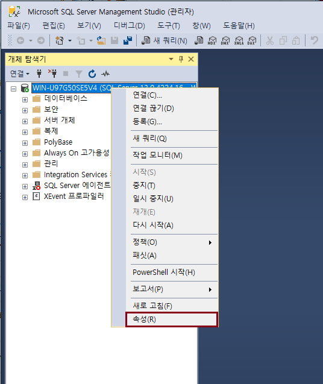
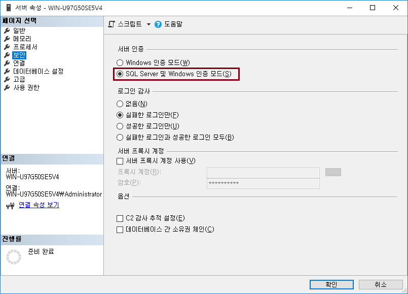
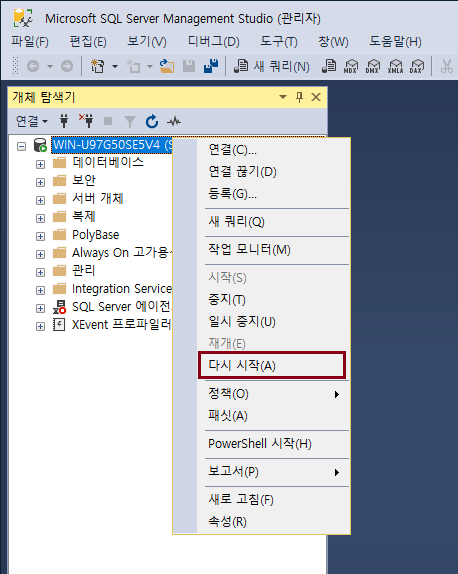

SQL Server 운영 기초
인증 모드
-
인증 모드 변경하는 방법에 대해 알아보자.
-
인증 모드를 변경하면 SQL Server 서비스를 재시작해야되서 운영 중에는 가급적 하지 않는다.
-
설치 시, 자기 환경에 맞게 인증 모드를 선택하자.
인증 모드 변경
-
데이터베이스 > 속성

-
서버 속성 > 보안 > 서버 인증 변경

-
데이터베이스 > 다시 시작

Let's Prcactice
-
혼합 모드 (SQL Server 및 Windows 인증 모드) 로 선택 시, Windows 계정으로 SQL Server 에 접속할 수 있을까?
처음으로
이전
다음